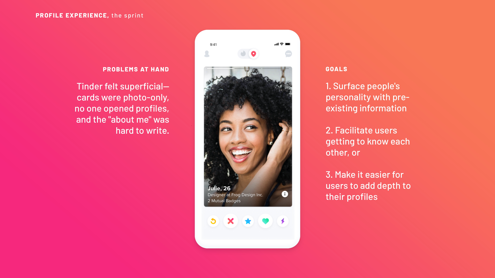
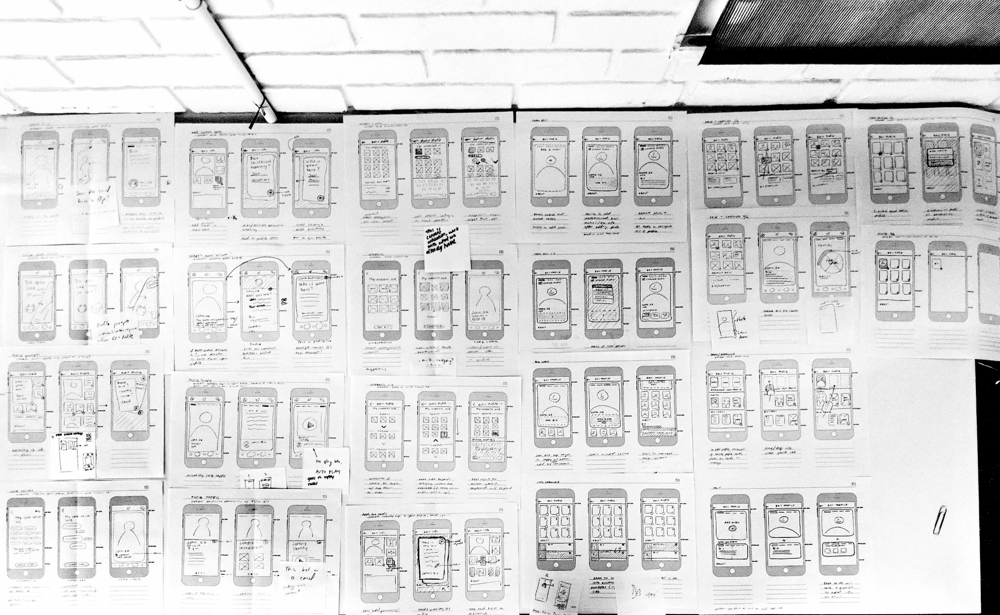
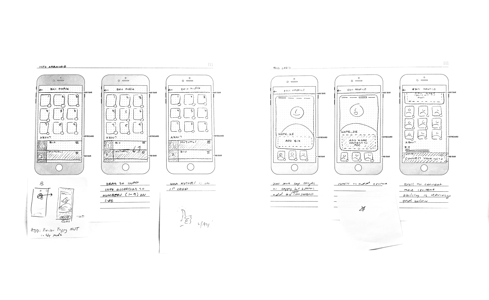

At Tinder, I worked on improving users' profile viewing and profile editing experience.

IDEATION I began sketching as many solutions as possible.

We focused in on two main ideas which surfaced from the numerous sketches.

IDEA 1—info arrange Let users to arrange and display their bio, instagram, top spotify artists, etc on their photos in a way that's meaningful to them.
Version 1—drag + icon
A higher-fidelity prototype of the intial sketch. Users could drag their profile content modules to arrange them.
I added icons on each photo to let users know what content was assigned to which photo.
Version 2—drag + photos
The social media icons weren't communicating the connection between photos and content and some people didn't read the hamburger icon as draggable.
In response to feedback, I placed photos directly next to profile content and changed the hamburger menu to up and down arrows.
FINAL VERSION—photos + content adding
The overlay on the photos was removed so the photographs could be read more easily.
The up/down arrows more communicated tapping rather than dragging, so I brought back the hamburger menu, and added the ability to edit content in the modules.
IDEA 2—Add content Encourage users to add content to their profiles because fuller profiles are more successful.
Version 1—Redirect to add
Users preview their own card and tap on a large CTA which redirects them to complete missing parts of their profile.
FINAL VERSION—Add on card
Redirecting users was too disorienting so I chose to let users edit directly on the card instead. This final version in comparision feels like less work for the user.